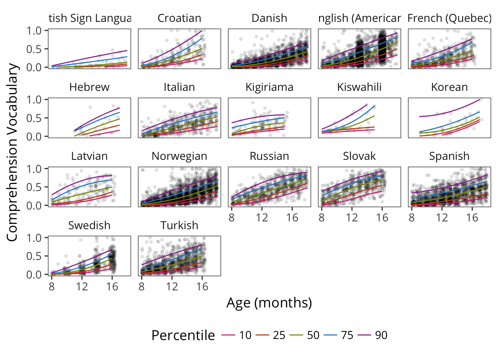
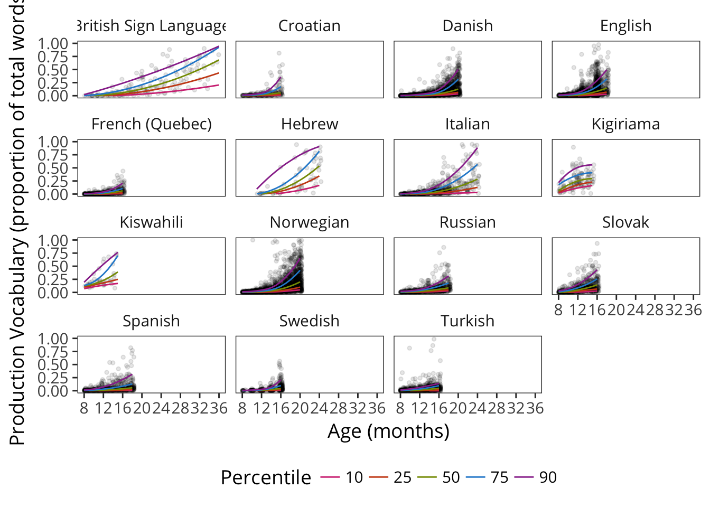

3 Vocabulary Development
Far from simply reflecting noise in our measuring instruments or variability in low-level aspects of physiological maturation, the variations that we will document (in vocabulary development) are substantial, stable, and have their own developmental course. Because this variation is substantial, it is critical for defining the boundary between normal and abnormal development; because it is stable, it provides a window onto the correlates and (by inference) the causes of developmental change; and because it has its own developmental course, it can be used to pinpoint critical developmental transitions that form the basis for theories of learning and change. (Bates et al., 1995)
This chapter focuses on a particular view of the data, namely that each child is represented by a single vocabulary score: the proportion of words that child knows out of the total in the form. We begin by quantifying the nature of variability across individuals, ages, and languages.
3.1 Norms
We begin with the general pattern of data across the instruments.
3.1.1 Comprehension
Comprehension is typically meausured only for younger children, using Words and Gestures instruments.1

3.1.2 Production
Production is measured both on Words and Gestures (WG) forms and Words and Sentences (WS) forms, though it is often at floor for younger children and so is not a reliable individual difference measure.

Words and Sentences

Stiched across forms. See A.
3.2 Quantifying Variability
One of the most important features of early vocabulary development is its variability (Fenson et al. 1994). Consider the English production data from the Words and Sentences form.

It’s immediately clear that there is tremendous variability in vocabulary. Consider just a single age group, 24-month-olds. The distribution of vocabularies across children is far from normally distributed, with many children at the very bottom of the scale and almost as many at the top. Quite a few two-year-olds on their second birthday are producing only a handful of words (or at least their parents say they are) and others are producing more than 600 listed on the form, with the total number higher than that even.2

One way to describe these data is to consider the relationship of the variance to the central tendency. The “coefficient of variation” (CV) is a common measure used for this purpose:
\[CV = \frac{\sigma}{\mu}\] This statistic allows standardized comparison of variability across measurements with different scales, an important concern when we want to compare forms with very different numbers of vocabulary items. For example, for two-year-olds, the mean productive vocabulary is 319 words, and the standard deviation is 175, words, leading to a CV of 0.55.
But, as seen in Figure @ref(fig:v_histogram), the distribution of productive vocabulary scores is far from normal; this trend is even more apparent at the younger and older ages. Thus, a non-parametric approach is more appropriate. Accordingly, we compute the MADM statistic, the non-parametric equivalent of the CV. In MADM, the mean \(\mu\) is replaced by the median (\(m(x)\), and the standard deviation \(\sigma\) is replaced by the mean absolute deviation (which captures how far away values are from the median):
\[MADM(x) = \frac{\frac{1}{n} \sum_{i = 1..n}{|x_i - m(x)|}}{m(x)}\]

In American English production, this ratio is actually close to 1 from age one until almost age two, suggesting that the standard difference from the median is actually as big as the median itself! The decline begins before variability is substantially truncated by the ceiling of the form, suggesting that variability between kids is really highest before the second birthday.
Imagine groups of three children. A group where one produced 30 words, one produced 100, and another produced 170 would have a MADM of 0.99. In contrast, one where they were more closely grouped – say 70, 100, 130 – would have a MADM of 0.44.
The next figure shows MADM across languages and instruments. This similarity in variability structure is quite striking, such that between the first and second birthdays, language is remarkably variable.

Yet this variability is quite consistent!


With the exception of populations like signers, e.g. in the case of British Sign Language, which is truncated here.↩
It will quickly get tiresome to acknowledge ceiling effects and parent report biases in every sentence, so we will acknowledge them up front and then mention them only when relevant throughout.↩